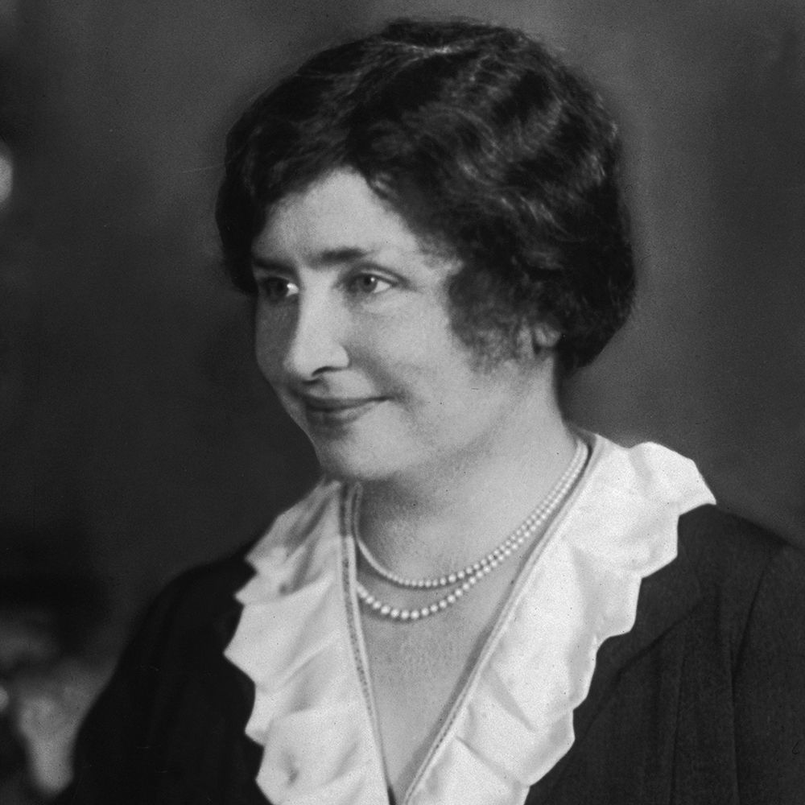
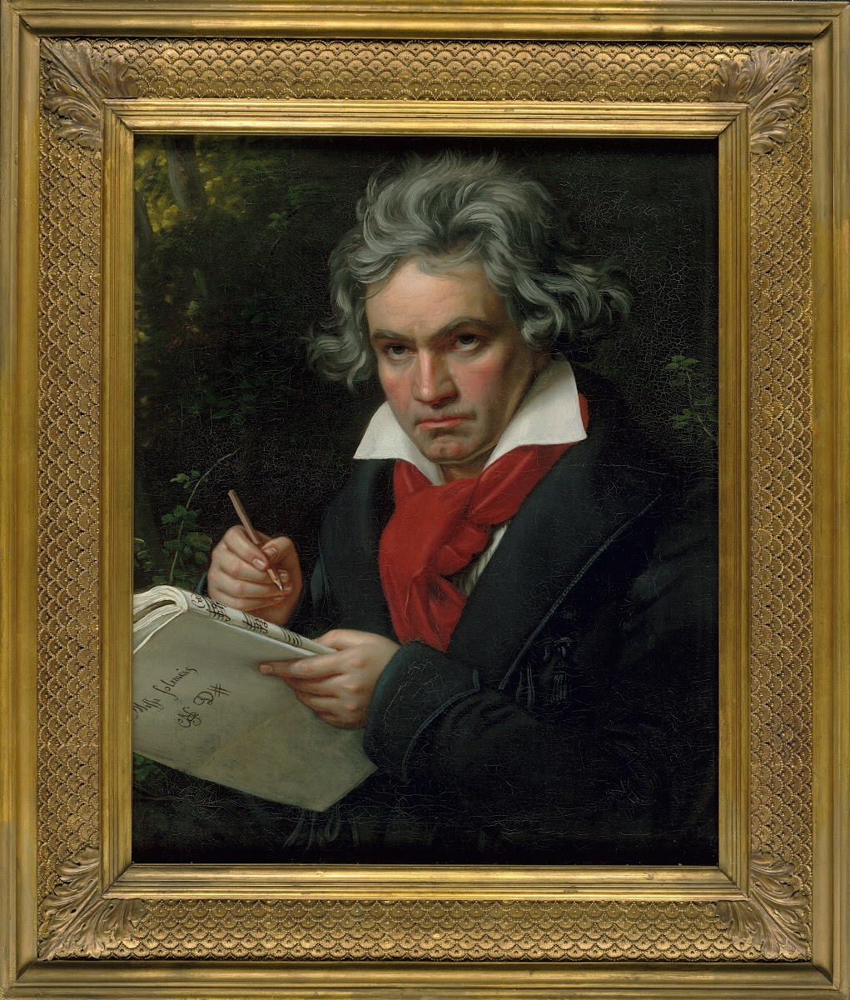

|
Hellen KellerHelen Keller was born on June 27, 1880 in Tuscumbia, Alabama, U.S. She was an American educator, advocate for the blind and deaf, and co-founder of the ACLU. Her education and training represent an extraordinary accomplishment for people who face these disabilities.Keller acquired an illness that left her blind and deaf at just 19 months old. At 6 years old, she was given education where she learned how to feel objects and associate them with words spelled out by finger signals on her palm, read sentences by feeling raised words on cardboard, and to make her own sentences by arranging words in a frame. At age 8, she began to learn how to speak under the guidance of Sarah Fuller from the Horace Mann School for Deaf in Boston. She learned how to lip-read by placing her fingers on the lips and throat of the speaker while the words were simultaneously spelled out for her. As an adult, she spread her knowledge to others facing similar difficulties by becoming a lecturer on behalf of the American Foundation for the Blind. She later established a $2 million endowment fund, an investment portfolio with the initial capital deriving from donations, and went on tours around the world as a lecturer. A contribution to society that she is well known for is the confounding of the American Civil Liberties Union alongside American civil rights activist Roger Nash Baldwin. |
 |
|  |
Ludwig van BeethovenLudwig Van Beethoven was born on December 16, 1770. He was one of the greatest and most influential composers of the Western European music tradition. Beethoven first noticed difficulties with his hearing when he was 28. However, by the time he was 44 or 45, he was totally deaf and unable to converse with others unless he passed written notes back and forth. Even though he was completely deaf, it did not stop him from composing music. Beethoven could no longer hear, so he retreated into the privacy of his imagination, heard music in his head, and wrote it down. Along with working out music in his head, he also spent a lot of time improvising at the piano. The keyboard was like a lifeline for Beethoven in his deafness. Furthermore, his deafness was a slow deterioration, rather than a sudden loss of hearing, so he could always imagine in his mind what his compositions would sound like. This is why Beethoven was able to write his most famous symphony, Symphony No. 9, when he was completely deaf and his most famous piano piece, Fur Elise, when he was almost completely deaf. |
|
Haben GirmaThe first deaf and blind person to graduate from Harvard Law School, Haben Girma is a human rights lawyer dedicated towards disability justice. She was born and raised in the San Francisco Bay Area, where she currently lives. Girma lost her hearing and sight from an unknown illness she had as a child.She says she became a lawyer to help increase access to books and other digital information for people with disabilities. She now works to change attitudes about disability around the world, including the development of accessible digital services: "Digital information is just ones and zeroes...It can be converted into any kind of format. And those people who develop these services—programmers, technology designers—have an incredible power to increase access for people with disabilities. And I hope they use it.” Throughout her lifetime, Girma has achieved several accomplishments. President Obama named her a White House Champion of Change. She received the Helen Keller Achievement Award, a spot on the Forbes 30 Under 30 list, and TIME100 Talks. President Bill Clinton, Prime Minister Justin Trudeau, and Chancellor Angela Merkel have all honored Haben. Haben believes disability is an opportunity for innovation, and she teaches organizations the importance of choosing inclusion. The New York Times, Oprah Magazine, and TODAY Show featured her memoir, Haben: The Deafblind Woman Who Conquered Harvard Law. |